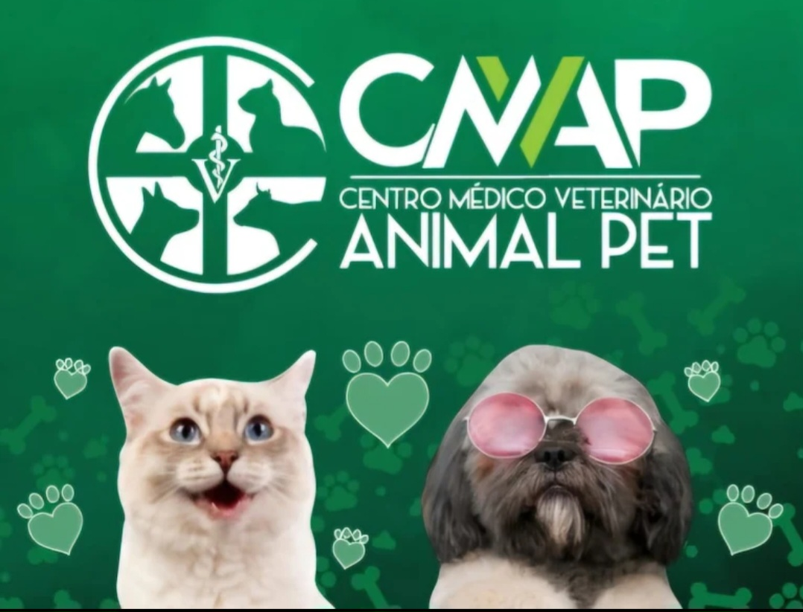
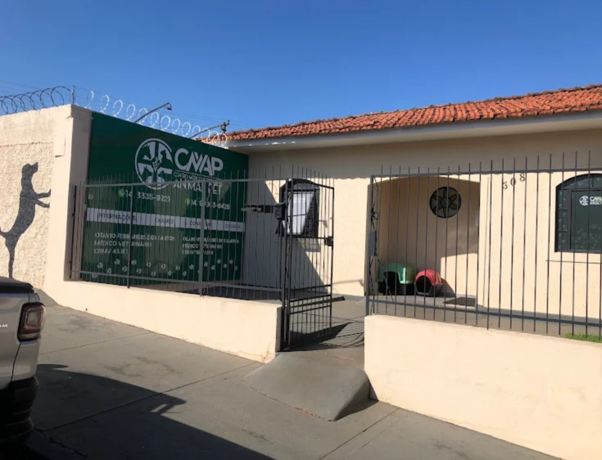
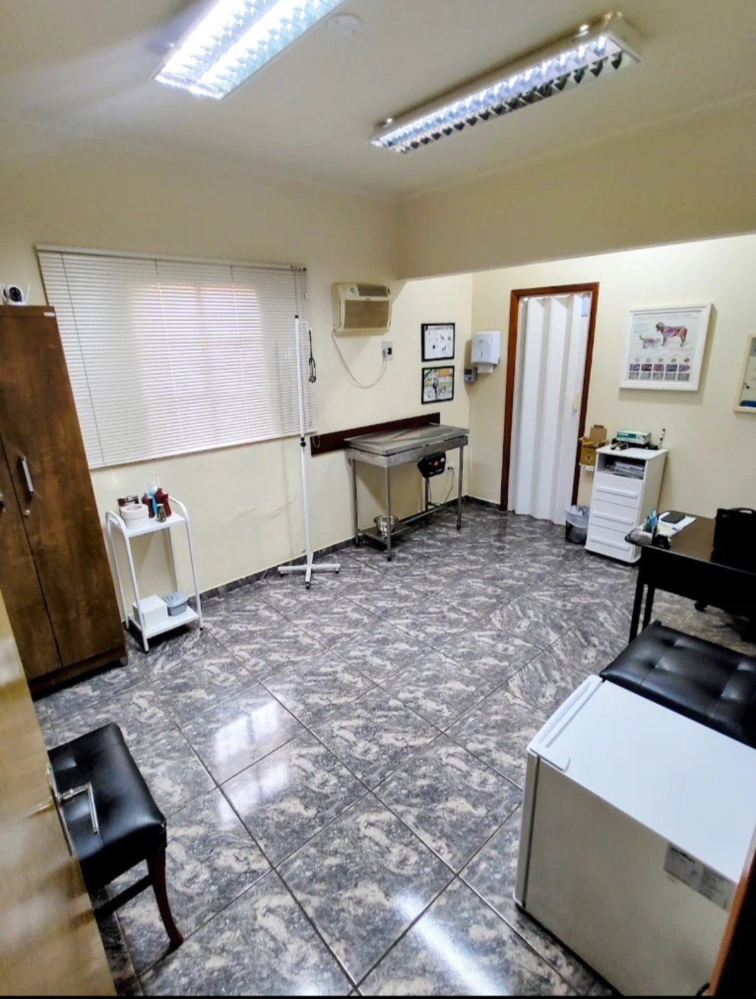
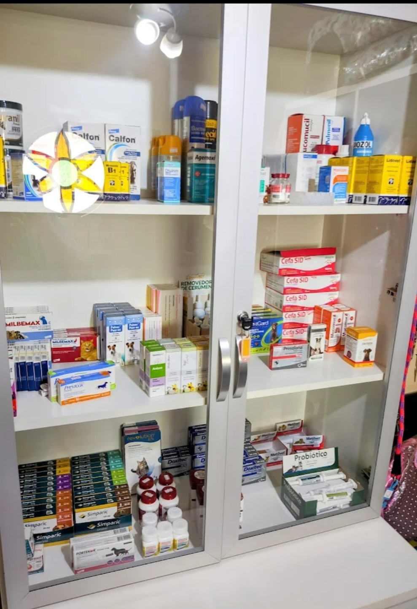
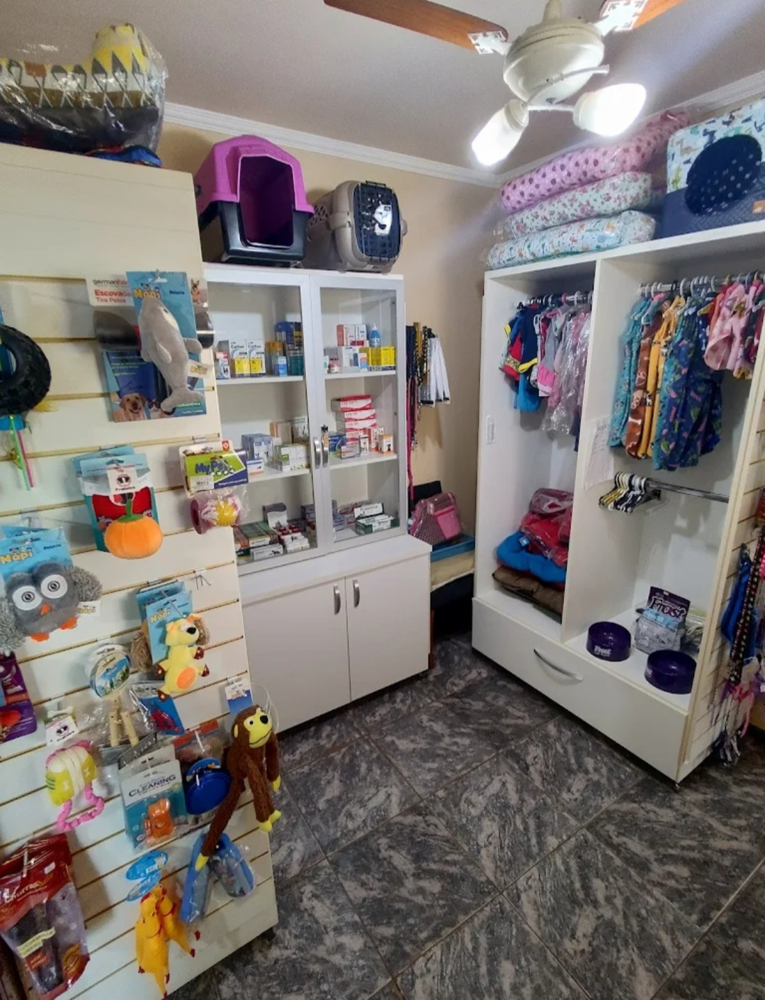

Clínica Veterinária • Ourinhos - SP
O Centro Médico Veterinário Animal Pet é referência em cuidado, saúde e bem-estar animal em Ourinhos, oferecendo atendimento completo com profissionais qualificados e estrutura preparada.
Com foco na qualidade e no carinho com os animais, a clínica realiza consultas, atendimentos clínicos e procedimentos com segurança, tecnologia e dedicação.
Além do atendimento veterinário, o espaço conta com produtos e acessórios, proporcionando praticidade e cuidado completo para o seu pet.
Endereço: Rua Francisco Romero, 308
Bairro: Jardim Matilde
Cidade: Ourinhos - SP
WhatsApp: (14) 99803-6426
Falar no WhatsApp✔ Atendimento veterinário completo ✔ Profissionais qualificados ✔ Estrutura equipada ✔ Cuidados com cães e gatos ✔ Produtos e acessórios para pets ✔ Atendimento com carinho e dedicação



